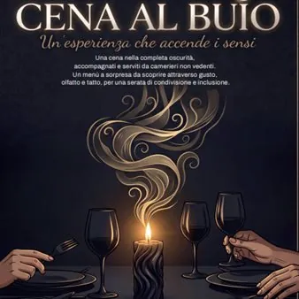

mar 17 nov · dalle 20:00
Cena al buio ad Azzano Decimo
Una cena in cui non si può vedere ciò che si ha nel piatto, riconoscere chi si ha accanto o affidarsi ai gesti abituali, martedì 17 novembre, alle ore 20.00, presso la Pizzeria Jenny Doppia O ad Azzano Decimo.
 Indicazioni
Indicazioni
- Costi e prenotazioni
- Costo non indicato · Prenotazione non indicata
- Programma
- Programma da verificare. Apri la fonte ufficiale per orari e possibili aggiornamenti.
- In caso di maltempo
- Nessuna indicazione specifica pubblicata.
- Note
- Acquisito automaticamente dalla fonte.
L’EVENTO
Descrizione completa
Il Comune di Azzano Decimo, in collaborazione con la sezione locale dell’Unione Italiana dei Ciechi e degli Ipovedenti, organizza la Cena al Buio martedì 17 novembre, alle ore 20.00, presso la Pizzeria Jenny Doppia O, in via Trieste 8 ad Azzano Decimo. L’iniziativa nasce dalla volontà di proporre un modo alternativo di fare sensibilizzazione su un tema, quello della disabilità visiva, sul quale spesso non siamo abituati a soffermarci nella vita di tutti i giorni. Anziché organizzare un incontro o una conferenza, si è scelto di partire da un’esperienza concreta, capace di coinvolgere direttamente i partecipanti e di offrire uno spunto di riflessione anche dopo la serata. Durante la cena, che si svolgerà nella completa oscurità, i partecipanti saranno accompagnati e serviti ai tavoli da camerieri non vedenti. Il menù sarà a sorpresa e, senza poter contare sulla vista, saranno il gusto, l’olfatto e il tatto a guidare la scoperta delle portate. L’obiettivo non è quello di simulare la condizione di una persona non vedente, un’esperienza che non può certo essere riprodotta nel corso di una cena, ma di offrire un’occasione per interrogarsi sul ruolo della vista nelle nostre abitudini, sull’autonomia delle persone con disabilità visiva e sull’importanza di una società più attenta alle diverse esigenze. La quota di partecipazione è di 30 euro, tutto incluso, e comprende anche un contributo di solidarietà destinato a sostenere le attività dell’Unione Italiana dei Ciechi e degli Ipovedenti.
Per ragioni organizzative, la prenotazione è obbligatoria.
È possibile iscriversi compilando il modulo online oppure telefonando al numero 333 3721913.
IL PROGRAMMA
Programma e orari
Appuntamenti raccolti dalle fonti elencate. Dove manca un orario, non è ancora disponibile in questa scheda.
Programma pubblicato
- Dal 2026-11-17 al 2026-11-17
INFORMAZIONI UTILI
Prima di partire
- Controllare la fonte prima di partire.
ORGANIZZAZIONE